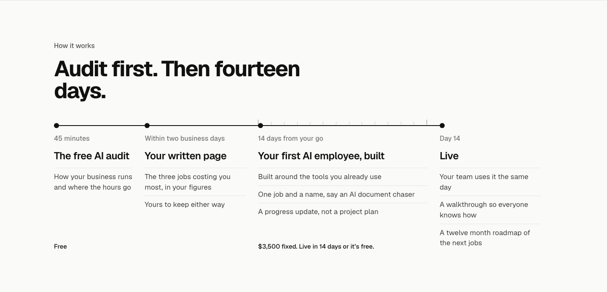
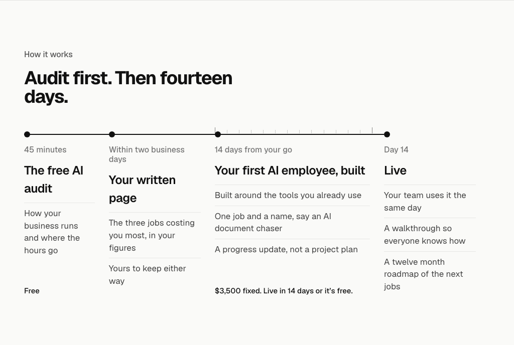
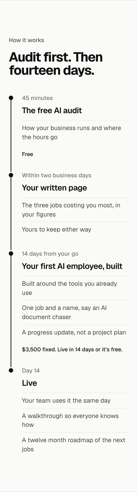
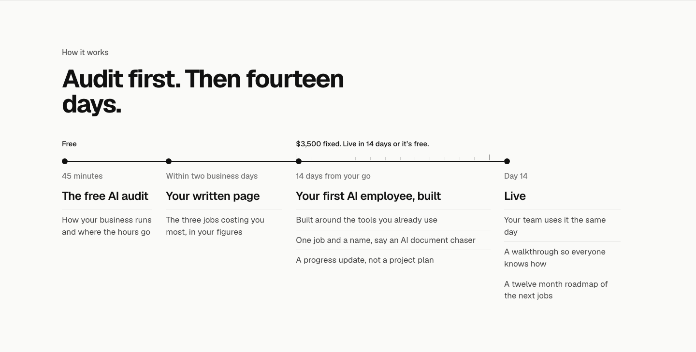
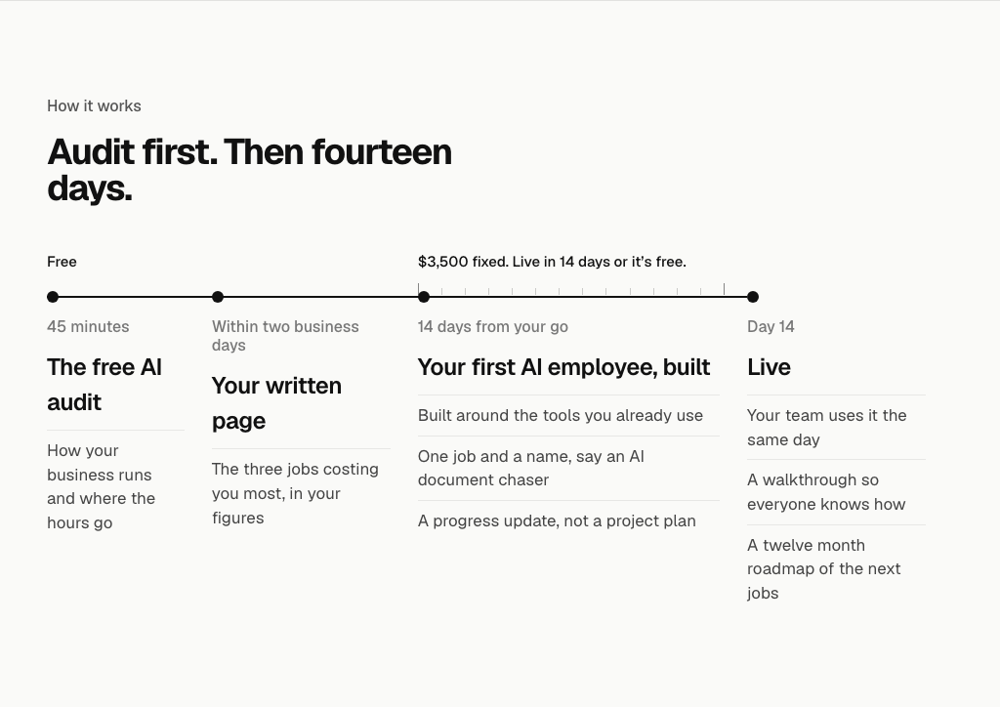
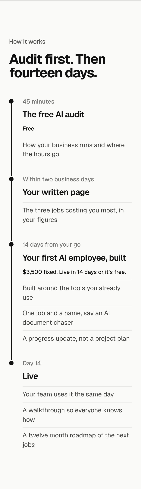
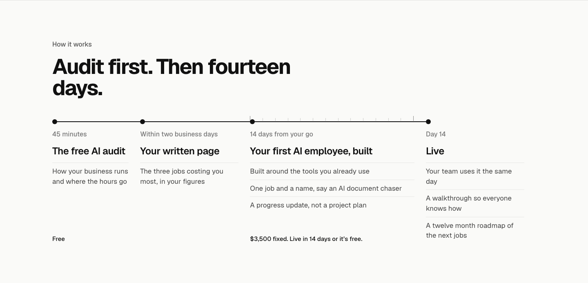
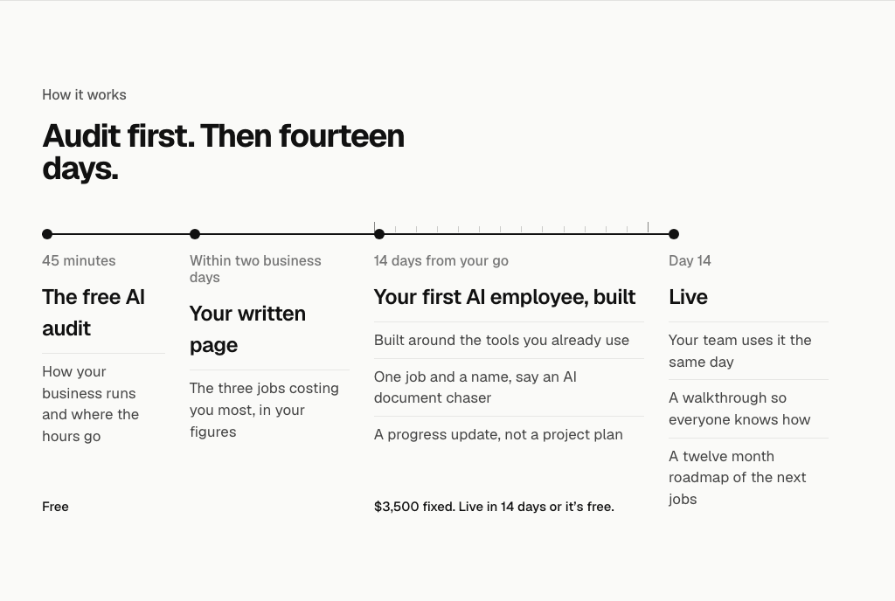
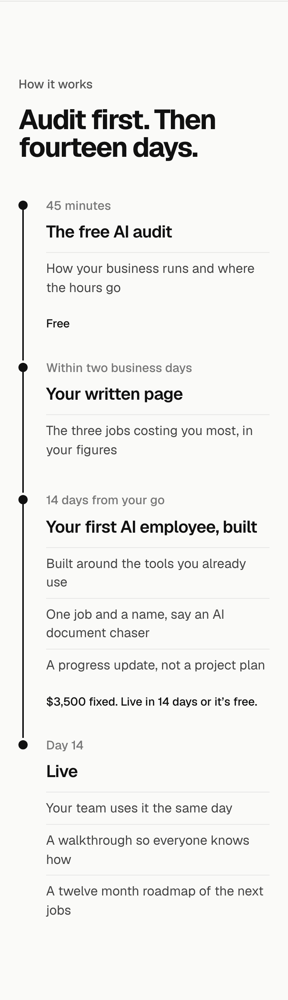

/pilot How it works: where the prices sit
At the foot of the stops the prices are level only by sitting under the tallest stop, which leaves the gap. Options 1 to 3 drop Yours to keep either way. 1440, 1024 and 375.
TodayBuilt: the prices at the foot of the stops, level with the bottom of Live, so there is a gap under the audit’s one fact. Still has Yours to keep either way.



1. Above the lineThe prices sit above the timeline over their stops: level by construction, no gap, and they read as what each stretch costs. On a phone each price goes under its title. Recommended.



2. Under the titlesEach price straight under its title, before the facts. Level while every title fits on one line: at 1024 The free AI audit wraps onto two lines and its price drops below the build's.
3. At the foot, as todayToday’s placement without Yours to keep either way. The prices stay level and the gap under the audit stays.


